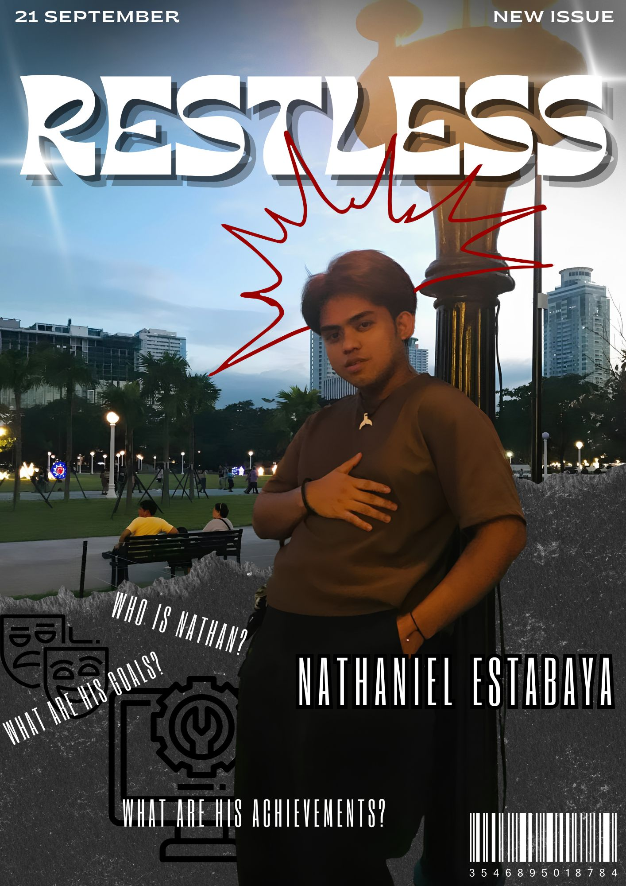
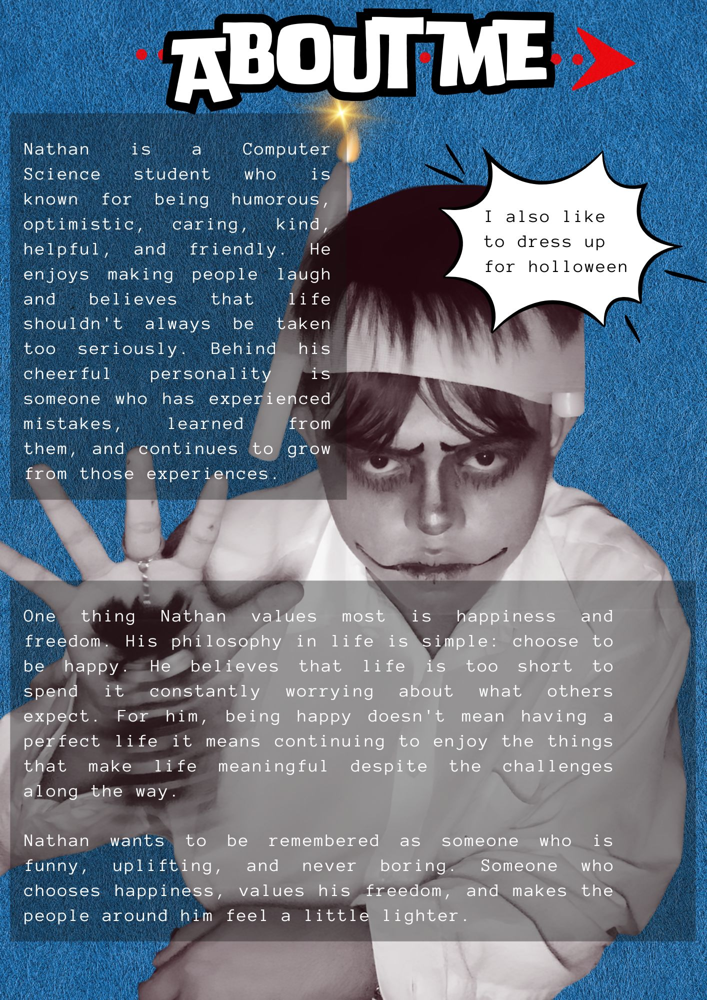
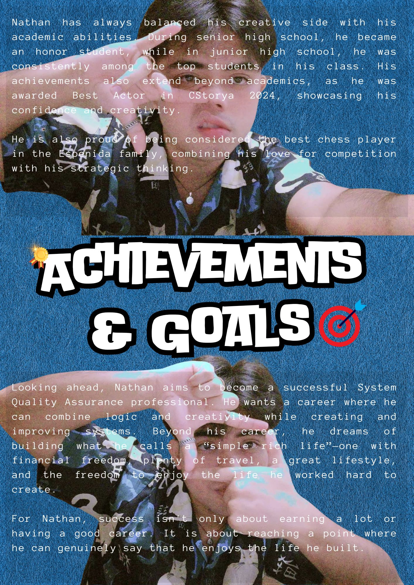
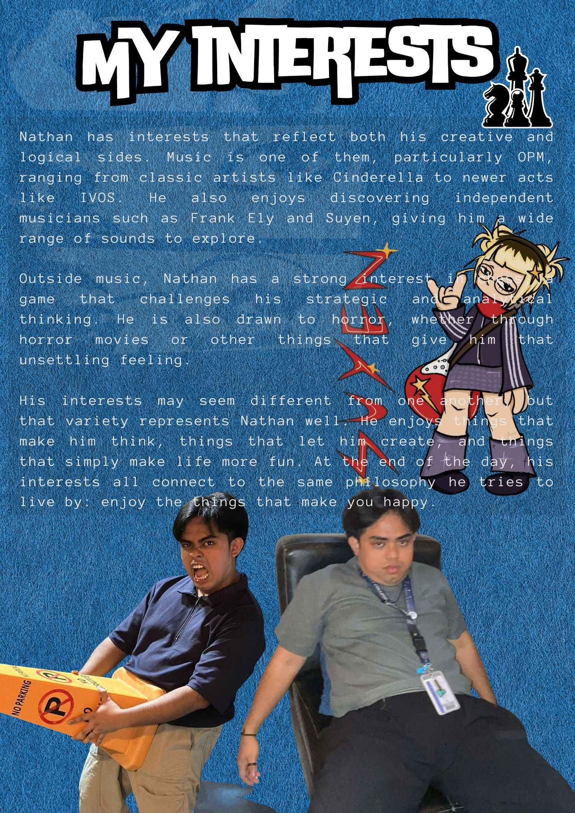

Nathaniel
Estabaya
Software Engineer & UI Designer
Architecting secure systems and crafting intuitive, cross-platform experiences. Bridging the gap between complex backend logic and seamless user interaction.
Video Introduction
Technical Arsenal
Featured Engineering
VOCA (Vision of Classroom Activity)
Real-time automated faculty monitoring system utilizing YOLOv8 and MediaPipe pose estimation for advanced activity recognition.
TechByte
Cross-platform e-commerce application for PC parts.
Library API
RESTful Library Management System built with custom HMAC authentication.
The Espresso Queue
Arcade-style operating system scheduling simulation game engineered to visualize complex CPU scheduling algorithms.
Brand & Editorial Design

Vertical Logo

Horizontal Logo
Poster Advertisement
Banner Advertisement

Blind Box Alley

Magazine Cover

Magazine Spread 1

Magazine Spread 2

Magazine Spread 3
Education
Bachelor of Science in Computer Science
City College of Calamba
Specializing in Software Quality Assurance (SQA) and Security Awareness, with a strong foundation in building secure digital systems and implementing rigorous testing protocols.
Engineering Focus
I specialize in bridging the gap between rigorous backend architecture and fluid user experiences. My projects reflect a commitment to clean code, scalability, and performance.
Whether implementing pose-estimation algorithms in Python or designing intuitive cross-platform applications in Flutter, I prioritize solutions that reduce cognitive load for both the end-user and the maintaining engineering team.